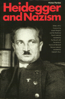

<body bgcolor="#FFFFFF" text="#000000" link="#0000FF" vlink="#CC0000" alink="#CC0000"><center><hr width="350" size="1" align="center" noshade>The first book to document Heidegger's close connections to Nazism&#151now available to a new generation of students<hr width="350" size="1" align="center" noshade><p><a href="https://cdcshoppingcart.uchicago.edu/Cart/ChicagoBook.aspx?ISBN=9780877226406&&PRESS=temple" target="_top">Buy this book!</a> | <a href="https://cdcshoppingcart.uchicago.edu/Cart/Cart.aspx?PRESS=temple" target="_top">View Cart</a> | <a href="https://cdcshoppingcart.uchicago.edu/Cart/Cart.aspx?PRESS=temple" target="_top">Check Out</a></p><p></p></center><!--none//--><h1>Heidegger and Nazism</h1>
<h3>Victor Far�as, edited by Joseph Margolis and Tom Rockmore</h3>
<P>cloth 0-87722-640-7 $37.95, Dec 89, <FONT COLOR=#990033>Out of Print</FONT>
<br>paper 0-87722-830-2 $30.95, Mar 91, <FONT COLOR=#990033>Available</FONT>
<BR> 368 pp
6x9
</P><BLOCKQUOTE><I>"[Far�as'] book includes more concrete information relevant to Heidegger's relations with the Nazis than anything else available, and it is an excellent antidote to the evasive apologetics that are still being published."</I>
<br>&#151<b>Richard Rorty</b>, <I>The New Republic</I><I></I></BLOCKQUOTE>
<p>Originally published in a French translation in 1987, this controversial work has received a tumultuous reception throughout Europe and continues to be the object of intense debate. In this first English edition, Victor Farias tracks the career of Martin Heidegger&#151one of the most influential figures in twentieth-century philosophy&#151and documents his intimate involvement with Nazism for much of his professional life.
<p>Although scholars have long known about Heidegger�s early commitment to National Socialism, it was generally thought that he became disenchanted with Hitler well before the outbreak of World War II. After more than a decade of solitary study in a variety of archives, Farias presents a carefully constructed case in which he reveals Heidegger�s initial adherence to Hitler�s Nazism and his subsequent development of a more personal version of National Socialism. Heidegger�s devotion to those themes was always at the center of his mature thought, appears to have preceded his election as rector of the University of Freiburg, and was sustained to the end of his life. Farias examines with great care and persistence the charge that Heidegger, who died in 1976, was a life-long anti-Semite. He notes that the philosopher praised Hitler to his colleagues and refused, even after the war, to criticize Nazi atrocities and genocide, or to recant his earlier Nazism.
<p>While Heidegger previously had appeared at worst naive by his acceptance of the Third Reich, Farias� evidence shows him to be the only major philosopher who freely embraced Nazism&#151the undisputed example of absolute evil in modern times. This damage to the official myth about Heidegger�s involvement raises questions about the relationship between politics and philosophy, about the presumed link between philosophy and virtue, and about what we may understand by the betrayal of reason in our time.
<p><I>Heidegger and Nazism</I> transforms the setting in which Heidegger�s standing will henceforth be assessed. From his earliest intellectual and emotional influences to the last posthumously published interview with <I>Der Spiegel</I>, Heidegger�s connection to National Socialism is shown to be a matter of conviction rather than necessary compromise as apologists still contend. Farias shows the reasonableness of linking the ideology and the philosophy and suggests where to probe to draw out detailed connections The book forces us to ponder the question of whether certain philosophical strategies and doctrines&#151particularly associated with Heidegger�s existential hermeneutics and the effect of his themes on the development of deconstruction&#151are not merely indefensible but peculiarly hospitable to the kind of "principled" falsification that fascists require. Providing the context for a close re-reading of Heidegger, this significant and historic work challenges the philosophical community to assess the full import of Heidegger�s life on his influential conception of philosophy and his resolution of particular philosophical problems.
<BR>&nbsp;<h2>Excerpt</h2><P>Excerpt available at <a href="http://www.temple.edu/tempress">www.temple.edu/tempress</a></p>
<BR>&nbsp;<h2>Reviews</h2>
<p><i>"Fascinating material for a study of a philosopher who would seem to have cooperated eagerly with the false promises of tyranny."</i>
<br>&#151<b>Allen Lacy</b>, <i>The New York Times Book Review</i>
<p><i>"A major work in the controversy over Heidegger's connection with Nazism... it also offers a fascinating look into the academic world of Hitler's Germany."</i>
<br>&#151<b><i>Choice</i></b>
<p><I>"The most serious and pointed inquiry ever made of the political activities of Heidegger.... One thing is certain...one can never again, after Far�as' book, approach Heidegger as we did before.... How [has] all modern thought...been able to make the most important philosophy of the century from a philosophy which did not utter a word about genocide? Heidegger, a Nazi? Without doubt."</I>
<br>&#151<b>Robert Maggiori</b>, <I>Lib�ration</I>
<p><I>"Far�as has demonstrated that [Heidegger's] political engagement was even deeper and more enduring than had previously been suspected."</I>
<br>&#151<b><I>The Times Literary Supplement</I></b>
<p><I>"The significant achievement of Far�as' </I>Heidegger and Nazism<I> is that it established beyond doubt Heidegger's commitment to Nazism and his involvement in the activities of the Nazi regime; it establishes also that the connection between Heidegger's philosophy and Nazism is essential and that it constitutes an inescapable project for further philosophic research."</I>
<br>&#151<b><I>The Washington Post</I></b>
<BR>&nbsp;<h2>Contents</h2><P>
<p>Foreword &#150 Tom Rockmore and Joseph Margolis
<br>Introduction
<p><b>Part I: From Youth to the Rectorship (1889-1933)</b>
<br>1. Messkirch, Origins, and the Religious Problem
<br>2. The Jesuit Novitiate and the Seminary at Freiburg
<br>3. Abraham a Sancta Clara and Martin Heidegger's First Written Work
<br>4. Heidegger's Contribution to the <I>Akademiker</I>
<br>5. From Freiburg to Marburg
<br><I>Studies at the University of Freiburg &#149
World War I &#149
Martin Heidegger, Teacher of Catholic Philosophy: The Crisis of Modernism and the Break with the Church &#149
Husserl at Freiburg</I>
<br>6. Marburg, <I>Being and Time</I>, and the Various Appointments
<br>7. The Return to Freiburg and the Berlin Temptation
<p><b>Part II: The Rectorate (1933-1934)</b>
<br>8. Heidegger, Rector at Freiburg
<br><I>The German Student Movement and its Avant-Garde Role &#149
The Seizure of Power in the Region of Baden: Freiburg &#149
The Homage to Albert Leo Schlageter</I>
<br>9. The Rector's Address: Its Assumptions and Its Effects
<br>10. Martin Heidegger's Activities as Rector
<br><I>A Case of Political Denunciation &#149
Students and Workers &#149
Lessons on "The Fundamental Question of Philosophy" during the Summer Semester, 1933</I>
<br>11. Heidegger and University Politics in the Third Reich
<br><I>Speeches at Heidelberg and Kiel: Heidegger and the Corporate Associations of University Professors &#149
Heidegger's Speech on the University and the National Socialist State &#149
Heidegger and the Association of German Universities &#149
Heidegger, Krieck, and the Creation of the KADH</I>
<br>12. Support for Hitler and Conflicts with Krieck
<br><I>The Demonstration of German Science of Adolf Hitler &#149
Heidegger is Called to the Universities of Berlin and Munich &#149
Attacks from Ernst Krieck and His Faction</I>
<br>13. The City and the Country: The Return to the Fatherland as a Political Theme
<br>14. The End of the Rectorate
<p><b>Part III: After the Rectorate: From 1934 to the Posthumously Published Interview</b>
<br>15. The Academy and the Professors of the Reich
<br><I>The Declaration of August 1934 &#149
Heidegger and the Academy of Professors of the Reich &#149
Heidegger and the Academy of German Law &#149
Heidegger and the Advanced School for German Politics &#149
Heidegger as Informer</I>
<br>16. Heidegger and the State Ideological Apparatus
<br><I>The Chair at G�ttingen &#149
The "Introduction to Metaphysics" Lectures (1935) &#149
An Article by Elfride Heidegger-Petri &#149
The Attitude of the Regime toward Heidegger around 1936 &#149
Writings: "Origin of the Work of Art" and "Ways to Language" &#149
The Philosophical Congresses at Prague (1934) and at Paris &#149
The Lectures on Nietzsche's Philosophy</I>
<br>17. Heidegger and the State Ideological Apparatus (Continued): Rome and Berlin
<br><I>Heidegger at Prague (1940) and at Munich (1941) &#149
Heidegger and Il Duce &#149
H�lderlin &#149
Parmenides and Heraclitus (1943-1944) &#149
The End of the War and the Beginning of </I>Polemos<I> &#149
Echoes</I>
<br>18. Return to Abram a Sancta Clara
<br><I>The </I>Spiegel<I> Interview</I>
<p>Notes
<br>Index
</P><BR>&nbsp;<H2>About the Author(s)</H2>
<table><tr><td valign="top"><img src="/tempress/authors/618_au1.gif" height="90" width="75"></td><td width="100%" valign="middle"><p>Chilean scholar <b>Victor Far�as</b> teaches in the Latin American Institute at the Free University of Berlin. A one-time student of Heidegger's, he holds a Doctorate in Philosophy.</P></td></tr></table><P><b>Joseph Margolis</b> is Laura Carnell Professor of Philosophy at Temple University.</P>
<P><b>Tom Rockmore</b> is Professor of Philosophy at Duquesne University.</P>
<P>Contributors: Edited, with a Foreword, by Joseph Margolis and Tom Rockmore. French materials translated by Paul Burrell, with the advice of Dominic Di Bernardi. German materials translated by Gabriel R. Ricci.</P>
<BR><H2>Subject Categories</H2>
<p><A HREF="/tempress/history.html" TARGET="_top">History</a>
<BR><A HREF="/tempress/political.html" TARGET="_top">Political Science and Public Policy</a>
<BR><A HREF="/tempress/philosophy.html" TARGET="_top">Philosophy and Ethics</a>
</p>
<p align="center"><a href="https://cdcshoppingcart.uchicago.edu/Cart/ChicagoBook.aspx?ISBN=9780877226406&&PRESS=temple" target="_top">Buy this book!</a> | <a href="https://cdcshoppingcart.uchicago.edu/Cart/Cart.aspx?PRESS=temple" target="_top">View Cart</a> | <a href="https://cdcshoppingcart.uchicago.edu/Cart/Cart.aspx?PRESS=temple" target="_top">Check Out</a></p><p><font face="Arial" size="1"><a href="copyright.html" onMouseOver="window.status='Web Copyright Policy';return true;" onMouseOut="window.status=''" title="Web Copyright Policy">&copy;</a> 2015 <a href="http://www.temple.edu" target="new" onMouseOver="window.status='Link to Temple University home page';return true;" onMouseOut="window.status=''" title="Link to Temple University home page">Temple University</a>. All Rights Reserved. http://www.temple.edu/tempress/titles/618_reg.html</font></p>